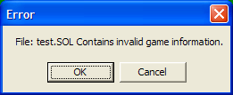

| Opening: Access using the
shortcut [CTRL] + O or selecting File -> Open from the menu.
Select the file that you wish to load. The default extension for
all solitaire games is .sol. |
Saving: Access using the
shortcut [CTRL] + S or seleting File -> Save from the menu. If
you select Save As... or you have not opened / previously saved a file,
you will be presented with a save file dialog box. Select or type
in the new file name to save the game to. The default extension
for all solitaire games is .sol. |
|
| Notes:
If a game type has not been specified, (ex: Streets and Alleys,
War, etc.) the program will attempt to determine the game type
from the file. Otherwise the game will load the file. If
the file is not from the correct game type (i.e. the game is a War!
game and you are playing Streets and Alleys) the program will present
an error message box:  A new game will be loaded. THE CURRENT GAME WILL BE LOST. |
Notes:
A game can not be saved once it has been won. Selecting save will
save the current game to the most recent file accessed reguardless if
it is of the same game type. The data in that file will be
overwritten and no warning will be printed. |